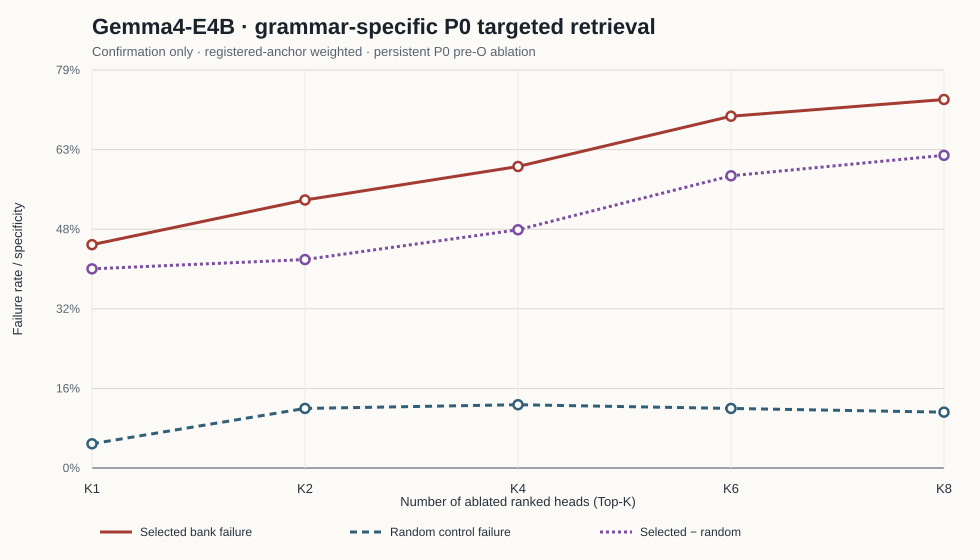

实验目的与可识别量
目的不是询问某个 head 是否“看见 needle”，而是检验：在模型即将从 item k 过渡到 k+1 的 P0 token 上，关闭按正确 next-needle attention mass 排出的 head bank，是否比关闭同层数量匹配的随机 heads 更容易使模型首先生成错误 city。
Endpoint。 自由生成的第一个 semantic city 是否等于 registry 中的 next city。
Primary contrast。 selected failure − mean(three registered random-control failures)。
Qwen 使用 K={32,64,80,96,112,128}；Gemma 使用 K={1,2,4,6,8}。所有 K 都是各 grammar 排名的嵌套前缀。Qwen K32–112 优先 exact layer-matched random，K128 使用 global same-K random；Gemma 优先 exact layer-matched，容量不足时冻结为 global same-K fallback，并在 grammar 表逐项记录。
Qwen3-8B dose response

| K | Confirmation anchors | Selected failure | Random failure | Selected − random |
|---|---|---|---|---|
| 32 | 87 | 9.2% | 4.2% | 5.0% |
| 64 | 87 | 11.5% | 5.7% | 5.7% |
| 80 | 87 | 12.6% | 6.1% | 6.5% |
| 96 | 87 | 20.7% | 7.3% | 13.4% |
| 112 | 87 | 32.2% | 5.4% | 26.8% |
| 128 | 87 | 34.5% | 5.4% | 29.1% |
Primary-K discovery / confirmation 分离
| Split | Anchors | Selected failure | Random failure | Selected − random |
|---|---|---|---|---|
| discovery | 169 | 32.5% | 4.3% | 28.2% |
| confirmation | 87 | 34.5% | 5.4% | 29.1% |
Grammar-specific confirmation
| Grammar | Full anchors | Confirmation anchors | Selected | Random | Δ | Control | Status |
|---|---|---|---|---|---|---|---|
adjacent_rank_after_city | 131 | 45 | 20.0% | 3.7% | 16.3% | global_same_k_without_selected_overlap | claim-grade |
adjacent_rank_before_city | 57 | 19 | 57.9% | 15.8% | 42.1% | global_same_k_without_selected_overlap | claim-grade |
same_unit_rank_before_city | 35 | 15 | 13.3% | 0.0% | 13.3% | global_same_k_without_selected_overlap | claim-grade |
structural_unmarked | 27 | 6 | 100.0% | 0.0% | 100.0% | global_same_k_without_selected_overlap | exploratory |
structural_invariant_bullet | 3 | 1 | 100.0% | 0.0% | 100.0% | global_same_k_without_selected_overlap | exploratory |
evidence_sequence_unranked | 2 | 1 | 100.0% | 0.0% | 100.0% | global_same_k_without_selected_overlap | exploratory |
structural_explicit_rank_before_city | 1 | 0 | — | — | — | global_same_k_without_selected_overlap | exploratory |
confirmation anchors <10 的 grammar 仅作 exploratory 描述。若 exact layer-matched control 容量不足，表中明确记录冻结后的 global same-K fallback；这不会改变 selected bank。
Gemma4-E4B dose response

| K | Confirmation anchors | Selected failure | Random failure | Selected − random |
|---|---|---|---|---|
| 1 | 90 | 44.4% | 4.8% | 39.6% |
| 2 | 90 | 53.3% | 11.9% | 41.5% |
| 4 | 90 | 60.0% | 12.6% | 47.4% |
| 6 | 90 | 70.0% | 11.9% | 58.1% |
| 8 | 90 | 73.3% | 11.1% | 62.2% |
Primary-K discovery / confirmation 分离
| Split | Anchors | Selected failure | Random failure | Selected − random |
|---|---|---|---|---|
| discovery | 180 | 73.9% | 5.4% | 68.5% |
| confirmation | 90 | 73.3% | 11.1% | 62.2% |
Grammar-specific confirmation
| Grammar | Full anchors | Confirmation anchors | Selected | Random | Δ | Control | Status |
|---|---|---|---|---|---|---|---|
adjacent_rank_after_city | 115 | 30 | 90.0% | 10.0% | 80.0% | layer_matched_random | claim-grade |
adjacent_rank_before_city | 5 | 1 | 100.0% | 0.0% | 100.0% | global_random | exploratory |
same_unit_rank_after_city | 8 | 0 | — | — | — | global_random | exploratory |
same_unit_rank_before_city | 140 | 58 | 65.5% | 12.1% | 53.4% | layer_matched_random | claim-grade |
structural_invariant_bullet | 2 | 1 | 0.0% | 0.0% | 0.0% | layer_matched_random | exploratory |
confirmation anchors <10 的 grammar 仅作 exploratory 描述。若 exact layer-matched control 容量不足，表中明确记录冻结后的 global same-K fallback；这不会改变 selected bank。
审计与相关页面
Generated UTC: 2026-08-20T23:02:51.810835+00:00
C:\Users\HP\Desktop\Research\UWM Yiqiao Zhong\CoT for Counting\Realistic_CoT_NiaH_Count\reports\v5_native_grammar_specific_p0\Qwen3-8B\qwen_grammar_specific_p0_k128_full_panel_complete.json: 8ab54c19db2f799ba30250ebf5652d26923f61dbc2af767d2d28a9b35023df5d
C:\Users\HP\Desktop\Research\UWM Yiqiao Zhong\CoT for Counting\Realistic_CoT_NiaH_Count\reports\v5_native_grammar_specific_p0\Qwen3-8B\qwen_grammar_specific_p0_dose_grid_complete.json: 5f9880b673d853dca38b431abbd14f87791c0bab6f4bf192c4bbb19a75a84ad6
C:\Users\HP\Desktop\Research\UWM Yiqiao Zhong\CoT for Counting\Realistic_CoT_NiaH_Count\reports\v5_native_grammar_specific_p0\Gemma4-E4B\gemma_grammar_specific_p0_k8_full_panel_complete.json: 81a09b55ae2ff91731398afef986b587bafb4a4531494ccc78a140d8f1005581
C:\Users\HP\Desktop\Research\UWM Yiqiao Zhong\CoT for Counting\Realistic_CoT_NiaH_Count\reports\v5_native_grammar_specific_p0\Gemma4-E4B\gemma_grammar_specific_p0_dose_grid_complete.json: c33d8ba3e3dff96b083b3f8a91f8bafebfbbeacccc3a3957aeb758df11fba03d
Schema: realistic_niah_v5_grammar_specific_p0_causal_report_v1